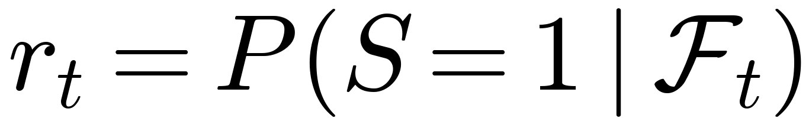
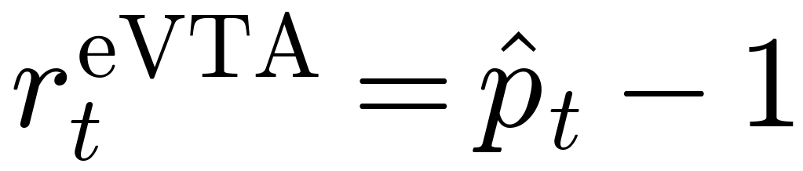

Reinforcement learning (RL) enables generalist robot policies to improve through trial-and-error interaction, yet its effectiveness is fundamentally constrained by sparse task rewards. Existing general-purpose reward models typically alleviate this issue by learning task progress from expert demonstrations, but introduce a distribution mismatch with the mixed-quality rollouts encountered during policy optimization, making their estimates unreliable on suboptimal and failed behaviors from which the policy must learn.
We introduce eVTA0, a demonstration-free reward learning paradigm where dense reward feedback can be learned directly from sparse task outcomes and policy experience.
Highlights
01
Theoretical foundation. We theoretically reveal that terminal task outcomes implicitly define intermediate reward signals, where rewards can be modeled as conditional task success probabilities and recursively learned through bootstrapping.
02
Demonstration-free paradigm. Based on this principle, we establish a demonstration-free reward learning paradigm by developing eVTA0, a general-purpose reward model trained through a simple TD-style bootstrapping recipe to estimate success probabilities from manipulation histories.
03
RL with Evolving Rewards. We further introduce RL with Evolving Rewards (RLER), a closed-loop learning framework that adapts eVTA0 using newly collected policy rollouts, allowing reward feedback to evolve with the changing behavior distribution of the policy.
04
Extensive validation. We conduct extensive evaluations on both reward modeling and policy learning. eVTA0 consistently provides high-quality reward feedback and improves policy performance under the same RL training budget. Real-world experiments further show that RLER improves overall success rates by 20%–26% over the initial SFT policies, while achieving 35%–36% improvements under OOD conditions.
01 / Reward quality
Higher Reward Quality
eVTA0 produces reward signals that more reliably track task evolution and distinguish successful from failed trajectories than state-of-the-art reward models.
eVTA0 remains conservative during early manipulation and sharply increases its predicted success probability once the bowl is reliably moved toward and placed on the plate, eventually approaching one at task completion.
Failed rollout
Confidence fades with emerging failure cues
eVTA0 initially increases its prediction when the robot successfully grasps and lifts the bowl, but decreases after the placement becomes unstable and remains low when the bowl is eventually tipped over. In contrast, Robometer continues to assign high scores even after the failed trajectory deviates from successful completion.
02 / Policy learning
Better Rewards, Better Policies
eVTA0 provides consistently effective reward guidance across diverse settings and enables more sample-efficient policy learning under the same training budget of 6,400 episodes.
As the policy evolves, RLER adapts eVTA0 with newly collected rollouts so that reward feedback stays aligned with the policy's changing behavior distribution — improving real-world success rates by 20–26 pp over initial policy and by 35–36 pp under distribution shifts.
Real-world Evaluation
Evaluation under real-world distribution shifts in object distance, pose, position, and appearance.
Task
Initial SFT
RLER Round 1
RLER Round 2
Fixed eVTA0
Gain over SFT
Pick CarrotDynamic Environment
32.0%
40.0%
68.0%
48.0%
+36 pp
Put ShuttlecockPrecision Control
45.0%
60.0%
80.0%
65.0%
+35 pp
Evaluated under unseen object configurations (25 trials for Pick Carrot and 20 for Put Shuttlecock), RLER Round 2 consistently outperforms the fixed eVTA0 baseline trained with the same rollout budget, achieving +15–20 pp improvement under OOD scenarios.
From Failure to Robust Execution
Previously unsuccessful condition
Put the shuttlecock at an unseen position
The object is moved to an unseen position where the initial policy fails in every trial. Through iterative reward evolution, RLER gradually adapts its behavior to the new configuration and recovers successful execution.
Initial SFT0/10
RLER · Round 13/10
RLER · Round 27/10
Fixed eVTA04/10
Real-world Rollouts
Initial SFT policyFailed rollout
eVTA0-RLERSuccessful rollout
Put the shuttlecock from the table onto the shuttlecock in the plate.
04 / MethodeVTA0 · RLER
Experience provides sufficient supervision.
During RL, a robot naturally generates successful, imperfect, and failed trajectories. eVTA0 transforms these experiences into dense supervision for reward learning.
Existing paradigm · learning progress from demonstrations
“How much progress has been made?”
Reward models learn progress from expert demonstrations, using temporal position as proxies for task advancement. However, policy optimization produces diverse trajectories with regressions and failures, making such progress estimates less reliable when the policy distribution evolves.
Expert demonstrations→progress estimates
eVTA0 · success probability from experience
“How likely is this rollout to succeed?”
eVTA0 learns from the policy’s own mixed-quality rollouts. With only terminal outcomes as supervision, TD-style bootstrapping propagates success signals backward through time, assigning each intermediate state a probability of eventual task success.
Policy rollouts + outcomes→success probability
Theoretical Foundation
The reward at every step

Reward is defined as the success probability conditioned on ℱt, the information revealed by the trajectory history at timestep t.
Overview of eVTA0. The left panel illustrates the model architecture, which estimates the probability of eventual task success conditioned on the reward-prediction instruction, manipulation task description, recent observation history and special reward token. The right panel illustrates the training procedure, where eVTA0 is trained on mixed-quality policy rollouts through temporal-difference (TD) style bootstrapping.
Integration into RL. The predicted success probability is transformed into a dense reward signal as

. This linear transformation preserves the ordering and pairwise differences of reward estimates while avoiding length bias that may favor unnecessarily long rollouts.
RL with Evolving Rewards (RLER)
Enabled by the demonstration-free learning ability of eVTA0, we introduce RL with Evolving Rewards (RLER), where newly collected policy rollouts are used to update eVTA0, and eVTA0 in turn provides adapted rewards for subsequent policy optimization. In this way, reward learning can evolve with the changing behavior distribution of the policy.
Illustration of RL training with a fixed eVTA0 (left) and the proposed RL with Evolving Rewards (RLER) framework (right). RLER adapts eVTA0 using newly collected policy rollouts, enabling reward learning and policy optimization to evolve together.
Toward general embodied reward system
Let the robot’s own experience discover what success looks like.
Inspired by the brain’s reward system, eVTA (embodied ventral tegmental area) aims to build a general reward mechanism for embodied intelligence — one that learns from experience, adapts with policy evolution, and scales across tasks. eVTA0 takes the first step toward this vision by learning success-probability signals directly from the robot’s own experience.
@article{wu2026evta0,
title={Demonstration-Free Success-Probability Reward Learning for Generalist Robot Policies},
author={Duo Wu and Haifeng Wang and Rongwei Lu and Jinghe Wang and Tianyi Xiong and Zhimin Wang and Chao Yu and Shuai Ma and Zhi Wang},
journal = {arXiv preprint arXiv:2609.33653},
year = {2026},
url = {https://arxiv.org/abs/2609.33653}
}